Main Weapons
Main weapons are the starting weapons in Glyphica and play a central role in gameplay. When you type a word displayed above an enemy, the main weapon locks onto that enemy as its target. Each main weapon has unique effects and mechanics, requiring different strategies to use effectively.
While some main weapons emphasize typing speed (WPM), others demand a more tactical approach. Like other weapons in the game, main weapons can be upgraded and evolved, enhancing their abilities and effectiveness as you progress.
List of Main Weapons
RepeaterHeat RayBarrageSplatter ShotOvermindWildcard Repeater
Tags: Kinetic, Main
Devastating weapon that fires a number of bullets in short bursts.
Evolutions
Name |
Description |
| Frost Fang |
Effects:
Cold Damage: +10
Freeze Chance: 3%
Affects base damage and affected by Cold damage modifiers. |
| Frost Fang II |
Effects:
Cold Damage: +20
Kinetic Damage: -10
Affects base damage. |
| Ricochet |
Effects:
Projectile Chain: 3
Repeater projectiles ricochet to random nearby targets, dealing 50% damage on hits after the first one. |
| Ricochet II |
Effects:
Projectile Chain: +2 |
| Shotgun |
Effects:
Projectile Count: +5
Projectile Spread: +400%
Kinetic Damage: -10
Repeater now fires a cluster of weaker projectiles with a large spread. Damage modifier affects base damage. |
| Shotgun II |
Effects:
Projectile Count: +5
Projectile Spread: +100% |
| Exploding Bullets |
Effects:
Explosive Damage: +10
Kinetic Damage: -10
Affects base damage. Repeater now uses explosive munitions that deal explosive damage in a small radius. |
| Exploding Bullets II |
Effects:
Explosive Damage: +15
Kinetic Damage: -10
The base explosion range for Repeater bullets is slightly increased. |
Upgrades
Name |
Description |
| Amplified Learning |
Evolution: +10 Kills |
| Battle Data |
Evolution: +20 Kills |
| Adept Tutelage |
Evolution: +30 Kills |
| Full Metal Jacket |
Damage: +10% |
| Armour-Piercing Upgrade |
Damage: +20% |
| Penetrator Enhancement |
Damage: +30% |
| Advanced Targeting |
Crit Chance: +1%
Crit Damage: +50% |
| Precision Guidance System |
Crit Chance: +2%
Crit Damage: +100% |
| Eagle Eye Integration |
Crit Chance: +3%
Crit Damage: +200% |
| Payload Increase |
Range: +25% |
Heat Ray
Tags: Heat, Main, D.O.T.
Fires a constant beam of incredibly accurate concentrated light that does damage over time.
Evolutions
Name |
Description |
| Ice Beam |
Effects:
Heat Damage: -15
Cold Damage: +15
Freeze Chance: 8%
Affects base damage. Heat Ray damage type will become Cold and have a increased chance to inflict Freeze. |
| Ice Beam II |
Effects:
Cold Damage: +10
Affects base damage. |
| Reflection |
Heat Ray now passes through enemies and reflects 2x off screen edge. |
| Reflection II |
Heat Ray now reflects 4x off screen edge. |
| Double-Bladed |
Another beam fires in the opposite direction. All evolutions and upgrades apply to both beams. |
| Blaster |
Effects:
Rate of Fire: +500%
Heat Ray now fires an independent, multi-hit laser projectile instead of a constant beam, that still counts as a D.O.T. weapon. |
| Blaster II |
Effects:
Projectile Length: +100%
Damage: +40% |
| Solar Tap |
Global Effect:
All Heat Effects/Weapons:
Status Effect Chance: +20% |
Upgrades
Name |
Description |
| Fusion Core |
Evolution: +10 Kills |
| Primordial Flame |
Evolution: +20 Kills |
| Apocalyptic Inferno |
Evolution: +30 Kills |
| Ferocious Flame |
Damage: +10% |
| Intense Heat |
Damage: +20% |
| Cataclysmic Burst |
Damage: +30% |
| Convergence |
Beam Thickness: +20%
(Range) |
| Radiance |
Beam Thickness: +40%
(Range) |
| Beamforge |
Beam Thickness: +60%
(Range) |
| Rapid Ignition |
Rate of Fire: +10% |
| Blazing Speed |
Rate of Fire: +20% |
| Infernal Surge |
Rate of Fire: +30% |
Barrage
Tags: Explosive, Main
Fires a volley of explosive rockets at a target and its surroundings. Recharges over time.
Evolutions
Name |
Description |
| Rocket Array |
Barrage will now fire 3 - 6 missiles per ammo bar instead of 2 - 5. |
| Rocket Array II |
Barrage will now fire 4 - 7 missiles per ammo bar instead of 3 - 6. |
| Seismic Munition |
Missiles embed themselves into the ground instead of detonating and generate explosive pulses for the next few seconds. |
| Seismic Munition II |
Seismic Munition Pulses:
Range: +25%
Duration: +25% |
| Resupply |
Supply pickups will now spawn. Activating these pickups will fully reload your main weapon and give a 30% damage boost to the next shot. |
| Resupply II |
Supply pickups now also award 30% explosion range boost to the next shot. |
| Total Saturation |
Global Effect:
All Explosive Effects/Weapons:
Damage: +15% |
Upgrades
Name |
Description |
| Supreme Barrage |
Evolution: +10 |
| Ultimate Siege |
Evolution: +20 |
| Apocalyptic Volley |
Evolution: +30 |
| Impact Burst |
Damage: +10% |
| Devastation Strike |
Damage: +20% |
| Cataclysmic Blast |
Damage: +30% |
| Extended Reach |
Range: +10% |
| Long-Range Payload |
Range: +20% |
| Wide-Angle Assault |
Range: +30% |
| Swift Reload |
Reload Speed: +10%
(Rate of Fire) |
| Rapid Resupply |
Reload Speed: +20%
(Rate of Fire) |
| Quick Recharge |
Reload Speed: +30%
(Rate of Fire) |
Splatter Shot
Tags: Chemical, Main, D.O.T.
Fire globs of goo at your opponents to cripple and damage them.
Evolutions
Name |
Description |
| Slime Bubble |
Slime Bubble pickups spawn within Splatter Zones.
When activated, Slime Bubbles burst, dealing damage in a small radius and creating additional Splatter Zones. |
| Slime Bubble II |
Increased occurence of Slime Bubbles.
Slime bubbles have a 50% chance of automatically bursting when it expires. |
| Infestation |
Splatter Shot Effects:
Status Effect Chance: +5%
Global Effects:
Status Effect Damage: +30% |
| Infestation II |
Enemies killed by Status Effects explode into Splatter Zones. |
| Lava |
Effects:
Chemical Damage: -100%
Heat Damage: +40
Affects base damage. Splatter Shot damage type will become Heat. |
| Lava II |
Effects:
Heat Damage: +20
Affects base damage. |
| Virulence |
Splatter Zone Effects:
Duration: -50%
Splatter Zones slowly grow larger over time. |
| Chemical Catalyst |
Global Effect:
All Chemical Effects/Weapons:
Duration: +50% |
Upgrades
Name |
Description |
| Toxic Efficiency |
Evolution: +10 |
| Hazard Mastery |
Evolution: +20 |
| Plaguebringer |
Evolution: +30 |
| Toxic Splash |
Damage: +10% |
| Venom Burst |
Damage: +20% |
| Doom Cloud |
Damage: +30% |
| Lingering Vapors |
Range: 10% |
| Neurotoxin Drift |
Range: 20% |
| Stratosphere Leak |
Range: 30% |
| Slow Dissipation |
Duration: 10% |
| Extended Half-Life |
Duration: 20% |
| Endless Fallout |
Duration: 30% |
Overmind
Tags: Electric, Drone, Main
Command an assortment of drones to rain devastation on your foes.
Evolutions
Name |
Description |
| Syncronize |
Every kill with Overmind has a 30% chance to add +1 kill to a random Drone Weapon's Evolution progress. |
| Syncronize II |
Chance to add +1 kill to a random Drone Weapon's Evolution progress increased to 50%. |
| Shock Spire |
Every 3 enemies targeted simultaneously spawns a Shock Spire between them.
Shock Spires emit periodic electrical pulses that traverses the entire screen and deal Electric damage. |
| Shock Spire II |
Effects:
Shock Spires:
Damage: +30%
Duration: +30% |
| Burning Ones |
Typing words charges up a meter that spawns explosive Drones when full.
Drones home in on enemies and explode on contact, dealing Explosive damage in a small radius. |
| Burning Ones II |
Effects:
Burning Ones: 5
Explosive Damage: 5
Explosion Range: +20 |
| Null Field |
Enemies targeted by Overmind are slowed and take +50% damage from other Electric effects and weapons. |
| Null Field II |
Enemies targeted by Overmind are also affected by Static while targeted. |
Upgrades
Name |
Description |
| Overcharge |
Damage: +10% |
| Shock Spines |
Damage: +20% |
| Stormcall |
Damage: +30% |
| Skitterstep |
Speed: +10% |
| Haste Matrix |
Speed: +20% |
| Blitzform |
Speed: +30% |
| Overbrood |
Drone Count: +1 |
| Progenation |
Drone Count: +2 |
| Farad Field |
Range: +10% |
| Hyperarc |
Range: +20% |
| Stormchain |
Range: +30% |
| Twitchfire |
Rate of Fire: +10% |
| Jolt Nest |
Rate of Fire: +20% |
| Sparkstorm |
Rate of Fire: +30% |
Wildcard
Tags: Kinetic, Heat, Cold, Electric, Main
Your next shot is randomly selected from four possible weapons, so fire carefully.
Evolutions
Name |
Description |
| Winter |
Wildcard will no longer fire Heat projectiles.
Global Effect:
All Cold Effects/Weapons:
Damage: +30% |
| Winter II |
Global Effect:
All Cold Effects/Weapons:
Damage: +50% |
| Warmth |
Wildcard will no longer fire Cold projectiles.
Global Effect:
All Heat Effects/Weapons:
Damage: +30% |
| Warmth II |
Global Effect:
All Heat Effects/Weapons:
Damage: +50% |
| Repulsor |
Wildcard will no longer fire Kinetic projectiles.
Global Effect:
All Electric Effects/Weapons:
Damage: +30% |
| Repulsor II |
Global Effect:
All Electric Effects/Weapons:
Damage: +50% |
| Diamond |
Wildcard will no longer fire Electric projectiles.
Global Effect:
All Kinetic Effects/Weapons:
Damage: +30% |
| Diamond II |
Global Effect:
All Kinetic Effects/Weapons:
Damage: +50% |
| Fragmentation |
When Kinetic projectiles hit Heat Orbs, trigger Heat explosions.
When Kinetic projectiles hit enemies Frozen by Cold projectiles, trigger Cold explosions. |
| Fragmentation II |
When Kinetic projectiles hit enemies, trigger Kinetic explosions. |
| Conduit |
Within range of Electric projectiles, Heat Orbs and enemies Frozen by Cold projectiles will deal Electric damage to enemies near them. |
| Conduit II |
Heat Orbs and enemies Frozen by Cold projectiles will always deal Electric damage to enemies near them. |
| Pestilence |
Wildcard:
All Status Effects:
Chance: +5% |
| Pestilence |
Global Effect:
All Status Effects:
Damage: +50% |
Upgrades
Name |
Description |
| Adaptive Cycle |
Evolution: +10 |
| State Advance |
Evolution: +20 |
| Overtier |
Evolution: +30 |
| Wild Output |
Damage: +10% |
| Chaos Amplifier |
Damage: +20% |
| Entropy |
Damage: +30% |
| Fluxfire |
Rate of Fire: +10% |
| Chaos Cascade |
Rate of Fire: +20% |
| Instability |
Rate of Fire: +30% |
| Scatterline |
Range: +10% |
| Path Divergence |
Range: +20% |
| Stochastic Trajectory |
Range: +30% |
Level-Up Weapons
Level-up weapons are obtained during a run as you level up. Once selected, the weapon is added to your arsenal. Each weapon has a unique activation method, but most can be triggered through typing and targeting with the main weapon.
A maximum of four weapons can be obtained this way. Once a weapon is added to your arsenal, its upgrades become available in the level-up upgrade pool, allowing you to enhance its abilities as you progress.
List of Level-Up Weapons
SpectreSentryTesla MineOscillatorMeteorHunterChopperMinefieldBlade TrapOrbiterGuardian Spectre
Tags: Kinetic, Drone
Completing words containing the glyphs a, e, o spawns fast melee drones equivalent to number of the above matched.
Evolutions
Name |
Description |
| Supercharged |
Every 20th Spectre spawned is a SUPER Spectre.
Super Spectres:
+100% Damage
+50% Duration
+50% Speed |
| Self Destruct |
Effects:
Explosive Damage: +50
When Spectre expires, it self-destructs, dealing Explosive Damage. Affects base damage and affected by Explosive damage modifiers. |
| Self Destruct II |
Effects:
Explosive Damage: +50
Range: +30%
Affects base damage. |
| Volatile Fuel |
Effects:
Speed: +50% |
| Volatile Fuel II |
Effects:
Speed: 50%
Duration: -25% |
| Stalking Algorithms |
Global Effect:
All Drone Effects/Weapons:
Speed: +35% |
Upgrades
Name |
Description |
| Ghostly Learnings |
Evolution: +10 Kills |
| Spectral Expertise |
Evolution: +20 Kills |
| Phantasmagoria |
Evolution: +30 Kills |
| Swarm Tactics |
Damage: +10% |
| Coordinated Assault |
Damage: +20% |
| Hive Mind Strategy |
Damage: +30% |
| Ricodium Batteries |
Duration: +10% |
| Energised Cells |
Duration: +20% |
| Power Core Overcharge |
Duration: +30% |
| Self-Assembly |
Completing a word above 7 glyphs in length spawns an additional Spectre. |
Sentry
Tags: Heat, Turret
Deploy an automated turret that fires at any enemy that comes within range.
Evolutions
Name |
Description |
| Defense Grid |
Effects:
Turret: +1 |
| Solid Core |
Effects:
Kinetic Damage: +30
Heat Damage: -30
Sentry now inflicts Kinetic Damage instead of Heat Damage and is considered a Kinetic Weapon. |
| Solid Core II |
Effects:
Kinetic Damage: +20
Global Effect:
All Kinetic Effects/Weapons:
Damage: +20% |
| Watcher Supreme |
Global Effect:
All Turret Effects/Weapons:
Range: +50% |
| Emergency Protocol |
Whenever a Shield Powerup is destroyed, Sentry will enter Emergency Protocol mode for 10 seconds.
During Emergency Protocol:
Range: +50%
Rate of Fire: +100% |
| Emergency Protocol II |
During Emergency Protocol:
Damage: +50%
Rotation Speed: +50% |
Upgrades
Name |
Description |
| Keen Observer |
Evolution: +10 Kills |
| Vigilant Sentinel |
Evolution: +20 Kills |
| Eternal Overwatch |
Evolution: +30 Kills |
| Hair Trigger |
Rate of Fire: +10% |
| Rapid Fire Accelerator |
Rate of Fire: +20% |
| Blitz Protocol |
Rate of Fire: +30% |
| Armour Piercing Rounds |
Damage: +10% |
| Tactical Armour Shredders |
Damage: +20% |
| Exo-Penetrating Munitions |
Damage: +30% |
| Magnified Optics |
Range: +10% |
| Enhanced Scopes |
Range: +20% |
| Precision Sight Systems |
Range: +30% |
Tesla Mine
Tags: Electric, Turret, D.O.T.
Completing words starting with glyphs b, c, d, e deploys an electrical turret that deals damage over time.
Evolutions
Name |
Description |
| Abundant Coils |
will also spawn a Tesla Mine in addition to existing glyphs. |
| Electrical Burn |
Effect:
Heat Damage: +12
Electric Damage: -12
Tesla Mine now inflicts Heat Damage instead of Electric Damage and is considered a Heat Weapon. |
| Electrical Burn II |
Effects:
Heat Damage: +6
Global Effect:
All Heat Effects/Weapons:
Damage: +20% |
| Restricted Area |
Enemies in Tesla Mine range have 20% increased chance to get Static status from Electric damage sources. |
| Restricted Area II |
Static damage is increased by 5 and range is increased by 30%. This applies to Static inflicted by all sources and affects base damage. |
| Storm Sovereign |
Global Effect:
All Turret Effects/Weapons:
Rate of Fire: +25% |
Upgrades
Name |
Description |
| Conductive Mastery |
Evolution: +10 Kills |
| Voltage Expertise |
Evolution: +20 Kills |
| Amplificatorium |
Evolution: +30 Kills |
| Reinforced Coils |
Duration: +10% |
| Resilient Conductors |
Duration: +20% |
| Hypercharged Induction |
Duration: +30% |
| Overcharge |
Damage: +10% |
| Voltage Surge |
Damage: +20% |
| Tempest Amplification |
Damage: +30% |
| Amplified Field |
Range: +10% |
| Horizon Reach |
Range: +20% |
| Infinitum |
Range: +30% |
| Static Surge |
Static Chance: +1% |
| Dark Conduction |
Static Chance: +3% |
| Voltaic Overload |
Static Chance: +5% |
Oscillator
Tags: Heat, Remote
Fire an oscillating stream of particles in the direction of your most recent target.
Evolutions
Name |
Description |
| Twin-Headed |
An additional stream of Oscillator projectiles fires in the opposite direction. |
| Ball Lightning |
Effect:
Electric Damage: +10
Heat Damage: -10
Oscillator now inflicts Electric Damage instead of Heat Damage and is considered an Electric Weapon. |
| Ball Lightning II |
Effects:
Electric Damage: +6
Global Effect:
All Electric Effects/Weapons:
Damage: +20% |
| Stabilised Plasma |
Oscillator projectiles now penetrate enemies. Enemies hit after the first take 50% damage. |
| Stabilised Plasma II |
Ignite damage is increased by 5. This applies to Ignite inflicted by all sources and affects base damage. |
| Prime Resonance |
Global Effect:
All Remote Effects/Weapons:
Damage: +15% |
Upgrades
Name |
Description |
| Precision Harmonics |
Evolution: +10 Kills |
| Adaptive Resonator |
Evolution: +20 Kills |
| Waveforma |
Evolution: +30 Kills |
| Plasma Ignition |
Damage: +10% |
| Quantum Discharge |
Damage: +20% |
| Nova Eruption |
Damage: +30% |
| Carpet Bombing |
Spread: +10% |
| Orbic Reach |
Spread: +20% |
| Quantum Expansion |
Spread: +30% |
| Critical Focus |
Crit Chance: +1%
Crit Mult: +50% |
| Precision Wave |
Crit Chance: +2%
Crit Mult: +100% |
| Quantum Surge |
Crit Chance: +3%
Crit Mult: +200% |
Meteor
Tags: Explosive, Remote
Periodically spawns target markers in random locations that can be activated to start an orbital bombardment.
Evolutions
Name |
Description |
| Surveillance |
Meteor now gets two target options instead of one. |
| Surveillance II |
Meteor gets three target options instead of two. |
| Ice Rain |
Effect:
Cold Damage: +80
Explosive Damage: -80
Meteor now inflicts Cold Damage instead of Explosive Damage and is considered a Cold Weapon. |
| Ice Rain II |
Effects:
Cold Damage: +20
Global Effect:
All Cold Effects/Weapons:
Damage: +20% |
| Relentless |
Effects:
Range: -50%
Rate of Fire: -50%
Meteors now fire continuously, moving towards the location of your last target. |
| Relentless II |
Effects:
Speed: +50%
Crit Chance: +10% |
| Sky Spotter |
Global Effect:
All Remote Effects/Weapons:
Range: +50% |
Upgrades
Name |
Description |
| Eager Crew |
Evolution: +10 Kills |
| Orbital Insight |
Evolution: +20 Kills |
| Veteran Sightfinder |
Evolution: +30 Kills |
| Precision Bombardment |
Damage: +10% |
| Impact Enhancer |
Damage: +20% |
| Apocalypse |
Damage: +30% |
| Relay Accelerator |
Spawn Rate: +10% |
| Launch Sequencer |
Spawn Rate: +20% |
| Rain of Death |
Spawn Rate: +30% |
| Longshot Module |
Range: +10% |
| Amplification Array |
Range: +20% |
| Cataclysmic Reach |
Range: +30% |
Hunter
Tags: Electric, Drone, D.O.T.
Completing words containing the glyphs i, o, u spawns electrical beam firing drones equivalent to number of the above matched.
Evolutions
Name |
Description |
| Hunter Elite |
Every 12th Hunter spawned is a Hunter Elite.
Hunter Elites:
+100% Damage
+50% Duration
+50% Speed
+50% Range |
| Electrified Bolts |
Effect:
Kinetic Damage: +10
Electric Damage: -10
Hunters now fire projectiles instead of electrical streams and is considered a Kinetic Weapon. |
| Electrified Bolts II |
Effects:
Kinetic Damage: +5
Global Effect:
All Kinetic Effects/Weapons:
Damage: +20% |
| Chain Lightning |
Hunter attacks now chain to 1 additional nearby enemy. |
| Chain Lightning II |
Hunter attacks now chain to 2 additional nearby enemies. |
| Predator Strain |
Global Effect:
All Drone Effects/Weapons:
Duration: +35% |
Upgrades
Name |
Description |
| Sharpened Focus |
Evolution: +10 Kills |
| Shock Precision |
Evolution: +20 Kills |
| Predator |
Evolution: +30 Kills |
| Electric Surge |
Damage: +10% |
| Squall Intensifier |
Damage: +20% |
| Quantum Overcharge |
Damage: +30% |
| Focused Beam |
Range: +10% |
| Directed Discharge |
Range: +20% |
| Lightning Cascade |
Range: +30% |
| Energy-Efficiency |
Duration: +10% |
| Optimised Destruction |
Duration: +20% |
| Perpetual Matrix |
Duration: +30% |
Chopper
Tags: Kinetic, Remote
Spawns a massive spinning blade on main weapon fire that travels to the screen edge, damaging all enemies in its path.
Evolutions
Name |
Description |
| Dual Wield |
Effect:
+1 Chopper |
| Flaming Blades |
Effect:
Kinetic Damage: -24
Heat Damage: +24
Chopper now inflicts Heat Damage instead of Kinetic Damage and is considered a Heat Weapon. |
| Flaming Blades II |
Effects:
Heat Damage: +10
Global Effect:
All Heat Effects/Weapons:
Damage: +20% |
| Boomerang |
Chopper now travels back to the Main Weapon after reaching the screen edge. |
| Boomerang II |
Effects:
Speed: +75%
Rate of Fire: +50% |
| Bloodbath |
Effects:
Damage to Bleeding Enemies: +10%
Bleeding enemies killed by the Chopper have 10% chance to activate Double Damage. |
| Bloodbath II |
Effects:
Damage to Bleeding Enemies: +25%
Increased chance for Double Damage to 25%. |
| Saw Launcher |
Effects:
Bleeding Chance: +7%
Bleeding Damage: +25%
Repeater Bleeding Chance: +7%
Chopper is replaced with two smaller sawblades with high attack speed, fired in a cone pattern. |
| Saw Launcher II |
Effects:
Bleeding Chance: +12%
Bleeding Damage: +50%
Repeater Bleeding Chance: +12%
Increase the number of sawblades fired by 2. |
Upgrades
Name |
Description |
| Sharpener |
Evolution: +10 Kills |
| Incision Expertise |
Evolution: +20 Kills |
| Guillotine |
Evolution: +30 Kills |
| Sharpened Edges |
Damage: +10% |
| Tempered Blade |
Damage: +20% |
| Razor's Edge |
Damage: +30% |
| Rotor Enhancements |
Spin Rate: +10% |
| Turbo Rotation |
Spin Rate: +20% |
| Hyperdrive Rotors |
Spin Rate: +30% |
| Lengthened Blades |
Range: +10% |
| Extended Reach |
Range: +20% |
| Longreach Masters |
Range: +30% |
| Razor-Edged |
Bleeding Chance: +1% |
| Bloodletter |
Bleeding Chance: +3% |
| Seration |
Bleeding Chance: +5% |
Minefield
Tags: Explosive, Drone
Completing words starting with glyphs f, g, h, i spawns slow-moving mines that explode on contact with enemies.
Evolutions
Name |
Description |
| Minelayer |
will also spawn Mines in addition to existing glyphs. |
| Infusion |
Effect:
Chemical Damage: +150
Explosive Damage: -150
Minefield now inflicts Chemical Damage instead of Explosive Damage and is considered a Chemical Weapon. |
| Infusion II |
Effects:
Chemical Damage: +50
Blight Chance: +10%
Global Effect:
All Chemical Effects/Weapons:
Damage: +20% |
| Hunter Seeker |
Effects:
Speed: +200%
Range: -50%
Mines gain homing movement towards random targets. |
| Hunter Seeker II |
Effects:
Mines Spawned: +1
Speed: +100% |
| Dirty Bomb |
Effects:
Chemical Damage: +5
Splattergun Damage: +10%
Mines release 3 puddles of goo when they explode. |
| Dirty Bomb II |
Effects:
Chemical Damage: +5
Splattergun Damage: +10%
While moving, mines periodically shoot a puddle of goo. |
| Recursive Mines |
The Main Turret periodically spawns an amount of mines based on half of Minefield's mine count, rounded down. The spawn rate is determined by Minefield's Rate of Fire stat. |
| Recursive Mines II |
Recursive Mines spawns 30% faster and spawns one additional mine. |
Upgrades
Name |
Description |
| AI Detonator |
Evolution: +10 Kills |
| Precision Ballistics |
Evolution: +20 Kills |
| Devastator |
Evolution: +30 Kills |
| Payload Booster |
Damage: +10% |
| Heavy Ordnance |
Damage: +20% |
| Warhead Amplification |
Damage: +30% |
| Reach Expansion |
Range: +10% |
| Battlefield Coverage |
Range: +20% |
| Boundless Radius |
Range: +30% |
| Rapid Fabricator |
+1 Mine Spawned |
| Feedback Loop |
Recursive Mines:
Spawn Rate: +20%
(Rate of Fire) |
| Cascade Protocol |
Recursive Mines:
Spawn Rate: +30%
(Rate of Fire) |
Blade Trap
Tags: Kinetic, Turret
Completing words starting with glyphs j, k, l, m deploys a spinning four-spoked blade trap.
Evolutions
Name |
Description |
| Blade Repository |
will also spawn a Blade Trap in addition to existing glyphs. |
| Poison Coating |
Effects:
Chemical Damage: +5
Blight Chance: 10%
Affects base damage and affected by Chemical damage modifiers. |
| Poison Coating II |
Effects:
Chemical Damage: +5
Blight Chance: +5%
Affects base damage. |
| Sawtooth Blades |
Blade Traps add their Crit Chance to their chance of inflicting Bleeding. |
| Sawtooth Blades II |
Bleeding Damage is increased by 5. This applies to Bleeding inflicted by all sources and affects base damage. |
| Cutting Edge |
Global Effect:
All Turret Effects/Weapons:
Crit Chance: +10% |
Upgrades
Name |
Description |
| Refined Snare |
Evolution: +10 Kills |
| Reactive Vortex |
Evolution: +20 Kills |
| Lacerator |
Evolution: +30 Kills |
| Hardened Cutters |
Damage: +10% |
| Titanium Cutters |
Damage: +20% |
| Diamond Cutters |
Damage: +30% |
| Lubricated Gears |
Spin Rate: +10% |
| Precision Gears |
Spin Rate: +20% |
| Quantum Gearbox |
Spin Rate: +30% |
| Improved Clockwork |
Duration: +10% |
| Faultless Clockwork |
Duration: +20% |
| Ricodium Chargers |
Duration: +30% |
Orbiter
Tags: Chemical, Remote
Completing words starting with glyphs n, o, p, q deploys an orb that orbits the Main Weapon, damaging everything in its path.
Evolutions
Name |
Description |
| Continuum |
will also deploy Orbiters in addition to existing glyphs. |
| Storm Ring |
Effects:
Chemical Damage: -70
Electric Damage: +70
Affects base damage and affected by Electric damage modifiers. |
| Storm Ring II |
Effects:
Electric Damage: +20
Static Effect Chance: +5%
Affects base damage. |
| Doppelganger |
Spawn an additional Orbiter going in the opposite direction. |
| Tether |
Orbiters now have a solid tether to the Main Weapon that does 30% of Orbiter's damage to enemies it touches. |
| Tether II |
Tethers now deal 50% of Orbiter's damage to enemies it touches. |
Upgrades
Name |
Description |
| Spiral Ascendancy |
Evolution: +10 |
| Cyclic Wisdom |
Evolution: +20 |
| Mindloop |
Evolution: +30 |
| Torque Spiker |
Damage: +10% |
| Momentum Core |
Damage: +20% |
| Perihelion |
Damage: +30% |
| Vector Ring |
Range: +10% |
| Orbit Extender |
Range: +20% |
| Radialix |
Range: +30% |
| Spin Stabilizer |
Duration: +10% |
| Tempo Anchor |
Duration: +20% |
| Continuance |
Duration: +30% |
| Pulse Engine |
Speed: +10% |
| Gyro Drive |
Speed: +20% |
| Whirlwinder |
Speed: +30% |
Guardian
Tags: Heat, Drone
Instantly deploy a Drone that fires lasers at enemies. Activate Fuel pickups to refuel Guardian, which will consume fuel and deactivate when empty.
Evolutions
Name |
Description |
| Toxic Ward |
Effects:
Heat Damage: -20
Chemical Damage: +20
Affects base damage. Guardian damage type will become Chemical. |
| Toxic Ward II |
Effects:
Chemical Damage: +15
Affects base damage. |
| Experimental Fuel |
Special Fuel pickups will spawn that gives Guardian temporary bonuses. Only one of these bonuses can be active at all times. |
| Experimental Fuel II |
All special Fuel pickups bonuses +50% and boost duration +50%. |
| Guardian Team |
Effects:
Damage: -25%
Drones: +1
Guardian is now two drones instead of one. |
| Guardian Team II |
Effects:
Damage: -25%
Drones: +1
Guardian is now three drones instead of two. |
Upgrades
Name |
Description |
| Eternal Sentinel |
Evolution: +10 |
| Supreme Protector |
Evolution: +20 |
| Ascendant Aegis |
Evolution: +30 |
| Vanguard Impact |
Damage: +10% |
| Defender's Wrath |
Damage: +20% |
| Sentinel’s Fury |
Damage: +30% |
| Sharpshooter Lens |
Range: +10% |
| Longshot Enhancer |
Range: +20% |
| Watcher's Precision |
Range: +30% |
| Unyielding Presence |
Duration: +10% |
| Timeless Ember |
Duration: +20% |
| Eternal Flame |
Duration: +30% |
| Lightning Reflexes |
Speed: +10% |
| Swift Guardian |
Speed: +20% |
| Rapid Vigilance |
Speed: +30% |
Enemies
Enemies in Glyphica are procedurally spawned based on an internal metric called threat, which increases as the run progresses. In Trial Mode, the threat is multiplied by the current Trial Level, making each level progressively harder. In Endless Mode, the threat is compared to an adaptive scaling system based on the player's level, with the higher value determining the spawn difficulty.
Enemies are also categorised into specials and elites, each with its own class cap that limits their spawn rate within the overall threat level.
List of Enemies
DroneShield DroneStalkerShooterSplitterWurmWarderSwarmerDrone
Drones are enemies that relentlessly move toward your main weapon. They can occasionally appear in two enhanced forms:
Enlarged: Triples their health, making them harder to defeat.
Hastened: Doubles their movement speed, increasing the urgency to eliminate them.
List of Variants
| Image |
Description |
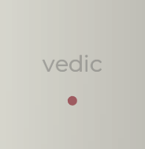 |
Health: 80
Damage: 40
|
|
Health: 200
Damage: 60
|
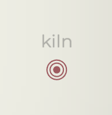 |
Health: 500
Damage: 90
|
|
Health: 1000
Damage: 120
|
|
Health: 1800
Damage: 150
|
|
Health: 3200
Damage: 180
|
|
Health: 5800
Damage: 210
|
Shield Drone
The Shield Drone is a variant of the Drone enemy that features a regenerating shield. It has two health bars: the top one represents the shield, which begins to regenerate if it does not take damage for a certain period.
List of Variants
| Image |
Description |
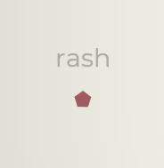 |
Health: 100
Shield: 200
Damage: 50
|
|
Health: 200
Shield: 400
Damage: 100
|
|
Health: 400
Shield: 800
Damage: 150
|
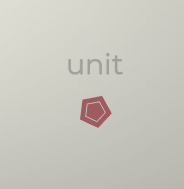 |
Health: 800
Shield: 1600
Damage: 200
|
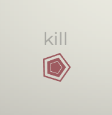 |
Health: 2400
Shield: 4800
Damage: 250
|
Stalker
The Stalker is a variant of the Drone enemy that initially appears with most of its word hidden. As you type, the word gradually reveals itself, requiring careful attention and quick typing to eliminate.
List of Variants
| Image |
Description |
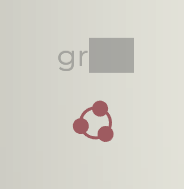 |
Health: 400
Damage: 80
|
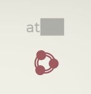 |
Health: 800
Damage: 120
|
|
Health: 1600
Damage: 160
|
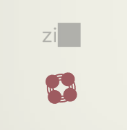 |
Health: 4800
Damage: 200
|
Shooter
The Shooter is an enemy that halts at the edge of the level and continuously fires durable projectiles toward your main weapon until it is destroyed.
List of Variants
| Image |
Description |
|
Health: 300
Damage: 25
|
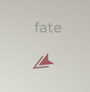 |
Health: 600
Damage: 25
|
|
Health: 1200
Damage: 25
|
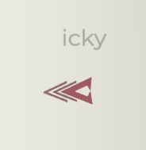 |
Health: 2400
Damage: 25
|
|
Health: 7200
Damage: 25
|
Splitter
The Splitter initially appears as a single enemy but is actually composed of multiple parts. When one part is destroyed, the Splitter loses its integrity, causing its components to break apart and become individual enemies.
List of Variants
| Image |
Description |
|
Shard Count: 4
Shard Health: 350
Shard Damage: 40
|
|
Shard Count: 5
Shard Health: 500
Shard Damage: 40
|
|
Shard Count: 6
Shard Health: 650
Shard Damage: 40
|
Wurm
The Wurm is a multi-segmented enemy whose parts must be destroyed in sequence. Each segment is linked to the next by an indestructible barrier that blocks all projectile attacks.
List of Variants
| Image |
Description |
|
Segment Count: 2
Segment Health: 80
Segment Damage: 50
|
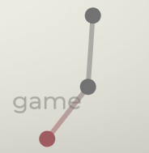 |
Segment Count: 3
Segment Health: 200
Segment Damage: 50
|
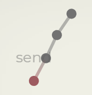 |
Segment Count: 4
Segment Health: 1000
Segment Damage: 50
|
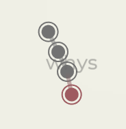 |
Segment Count: 4
Segment Health: 1800
Segment Damage: 50
|
Warder
The Warder is an elite enemy that appears in the late game. It features a revolving shield that blocks damage from the direction the shield is currently facing. Additionally, while the Warder is alive, it provides a protective aura to nearby enemies, making them invulnerable until the Warder is defeated.
List of Variants
| Image |
Description |
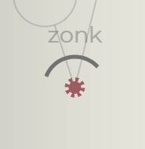 |
Health: 300
|
Swarmer
The Swarmer is an elite enemy that periodically launches groups of smaller enemies toward the main weapon. It continues to do so until it is destroyed.
List of Variants
| Image |
Description |
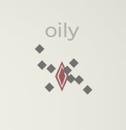 |
Health: 2000
|
Loot Items
Loot items are obtained during a run by activating a treasure chest pickup. A randomised selection of loot items will be displayed, and choosing one grants a passive bonus that remains active for the rest of the run.
Loot items are categorised as common, uncommon, and rare, which determine their likelihood of appearing in loot selections. Defeating a boss in Trial Mode rewards a treasure chest containing only rare items.
List of Rare Loot
|
Name |
Description |
| |
Seer |
If you have 0 Re-rolls upon entering a level-up, evolution or loot screen, you will have 1 Re-roll instead. |
| |
Makeshift |
All Drone Weapons:
Chance for additional drone: 35% |
| |
Plunder |
+1 Loot Option |
| |
Multi-Targeting |
All Remote Weapons get +1% Crit Chance for each Weapon you own. |
| |
Giant Magnet |
You have a 50% chance of automatically collecting Pickups when they expire. |
| |
Frostbite |
Enemies take damage over time when Frozen. |
| |
Necrobomb |
On destroying an enemy with Explosive Crit damage, trigger a series of explosions around the position of the fallen enemy. |
| |
Prize |
On destroying an enemy with Crit damage, 30% chance of spawning Re-roll, Shield or Health pickups. |
| |
Aftershock |
Crit damage will always inflict status effect. |
| |
Vampirism |
Gain health equal to 5% of Kinetic Crit damage. |
| |
Wisdom |
On picking up Shield, gain 10 Kills to all weapon Evolutions. |
| |
Jester |
On picking up Re-roll, deal a random amount of damage between 0 and 100 to all enemies on screen. |
| |
Last Stand |
On Shield destroyed, gain Double Damage. |
| |
Triple Damage |
All Double Damage pickups are now Triple Damage instead. |
| |
Fracture |
All damage to Frozen enemies are increased by 50%.
Modifier is multiplicative. |
| |
Ascetic |
When exiting Loot screen, gain +10% damage for every unused Re-roll for 20 seconds. |
| |
Harmonizer |
All equipped weapons get one Evolution level. |
| |
Immortality |
If your Main Weapon is about to be destroyed, it will be reduced to 1 health instead. This ability can only be used once every 2 minutes. |
| |
Enlightenment |
On destroying an enemy with Crit damage, gain +1 kills to all weapons Evolutions. |
| |
Closer |
Completing an enemy's word after it's destroyed gives +10% damage for 10 seconds. Stacks up to 3 times. |
| |
Murderous |
All Drone Weapons:
+50% Damage |
| |
Executioner |
All Turret Weapons:
+50% Damage |
| |
Degeneration |
All Remote Weapons:
+50% Damage |
List of Uncommon Loot
|
Name |
Description |
| |
Tsunami |
All Explosive Weapons:
Range: +25% |
| |
Shockwave |
All Explosive Weapons:
Damage: +25% |
| |
Annihilation |
All Explosive Weapons:
Crit Mult: +100% |
| |
Descent |
All Explosive Weapons:
Double Damage Pickup:
Drop Chance: +2% |
| |
Shattershot |
All Kinetic Weapons:
Damage: +25% |
| |
Eruption |
All Kinetic Weapons:
Rate of Fire: +25% |
| |
Piercer |
All Kinetic Weapons:
Crit Chance: +2% |
| |
Harbinger |
All Kinetic Weapons:
Bleed Effect Chance: +4% |
| |
Inferno |
All Heat Weapons:
Damage: +25% |
| |
Plasmator |
All Heat Weapons:
Range: +25% |
| |
Phoenix |
All Heat Weapons:
Re-roll Chance: +5% |
| |
Pyroclysm |
All Heat Weapons:
Ignite Effect Chance: +4% |
| |
Cryostasis |
All Cold Weapons:
Damage: +25% |
| |
Glacier |
All Cold Weapons:
Freeze Effect Chance: +4% |
| |
Repulsor |
All Cold Weapons:
Shield Chance: +5% |
| |
Cryogen |
All Cold Weapons:
Duration: +25% |
| |
Overload |
All Electric Weapons:
Static Effect Chance: +4% |
| |
Megastorm |
All Electric Weapons:
Damage: +25% |
| |
Amplifier |
All Electric Weapons:
Rate of Fire: +25% |
| |
Singularity |
All Electric Weapons:
Duration: +25% |
| |
Contagion |
All Chemical Weapons:
Blight Effect Chance: +4% |
| |
Sepsis |
All Chemical Weapons:
Damage: +25% |
| |
Convulse |
All Chemical Weapons:
Rate of Fire: +25% |
| |
Decay |
All Chemical Weapons:
Duration: +25% |
| |
Infinity |
All Drone Weapons:
Duration: +25% |
| |
Hyperjets |
All Drone Weapons:
Speed: +25% |
| |
Overmind |
All Drone Weapons:
Damage: +25% |
| |
Frostbane |
All Drone Weapons:
Freeze Drop Chance: +2% |
| |
Omniboost |
All Remote Weapons:
Range: +25% |
| |
Instalink |
All Remote Weapons:
Speed: +25% |
| |
Command |
All Remote Weapons:
Damage: +25% |
| |
Energizer |
All Turret Weapons:
Duration: +25% |
| |
Hellstorm |
All Turret Weapons:
Rate of Fire: +25% |
| |
Exactitude |
All Turret Weapons:
Damage: +25% |
| |
Onslaught |
All Status Effects:
Damage: +25% |
| |
Torment |
All Status Effects:
Duration: +25% |
| |
Jackpot |
All Loot Effects:
Damage: +25% |
| |
Mystery |
All Loot Weapons:
Crit Chance: +2% |
| |
Rampage |
All Augment Effects:
Damage: +25% |
| |
Beyond |
All Augment Effects:
Range: +25% |
| |
Arsenal |
All Weapons:
Damage: +12.5% |
| |
Lifesaver |
All Weapons:
Duration: +12.5% |
| |
Starview |
All Weapons:
Range: +12.5% |
| |
Point Blank |
Enemies hit close to Main Weapon receive +20% damage. |
| |
Aggravation |
All Weapons:
Status Chance: +2% |
| |
Cryotechnics |
Freeze Pickups:
Drop Chance: +2% |
| |
Warlike |
Double Damage Pickups:
Drop Chance: +4% |
| |
Pinata |
Global Effect:
Loot Frequency: +20% |
| |
Glass Cannon |
All Weapons:
Damage: +30%
Main Weapon:
Max Health: -50% |
| |
Regeneration |
You heal 5% of max health when you activate a Loot, Freeze, Double Damage, Re-roll or Shield pickup. |
| |
Erosion |
D.O.T. weapons can Crit. |
| |
Shatter |
All Kinetic Weapons gain +5% Crit Chance against Frozen enemies. |
| |
Resilience |
Activating Shield pickups increases your global Duration by 10% for 10 seconds. Stacks up to 3 times. |
| |
Gambler |
Adds 1 Re-roll and increase Max Re-roll, to a total of 6. |
| |
Protector |
Adds 1 Shield and increase Max Shields, to a total of 4. |
| |
Flawless |
Every x17 Perfect Input also increases your global Rate of Fire by 5%. |
| |
Release |
On mistype, deal 20 Explosive damage to all enemies for every x17 Perfect Input. |
| |
Wasting |
All D.O.T. Weapons:
+35% Rate of Fire |
| |
Wither |
All Status Effects:
+35% Rate of Fire |
List of Common Loot
|
Name |
Description |
| |
Blast |
All Explosive Weapons:
Range: +2% |
| |
Detonation |
All Explosive Weapons:
Damage: +2% |
| |
Crush |
All Kinetic Weapons:
Damage: +2% |
| |
Volley |
All Kinetic Weapons:
Rate of Fire: +2% |
| |
Scorch |
All Heat Weapons:
Damage: +2% |
| |
Embers |
All Heat Weapons:
Range: +2% |
| |
Permafrost |
All Cold Weapons:
Damage: +2% |
| |
Chill |
All Cold Weapons:
Duration: +2% |
| |
Shock |
All Electric Weapons:
Damage: +2% |
| |
Surge |
All Electric Weapons:
Rate of Fire: +2% |
| |
Uplink |
All Drone Weapons:
Duration: +2% |
| |
Sting |
All Drone Weapons:
Damage: +2% |
| |
Reach |
All Remote Weapons:
Range: +2% |
| |
Strike |
All Remote Weapons:
Damage: +2% |
| |
Fortify |
All Turret Weapons:
Duration: +2% |
| |
Bastion |
All Turret Weapons:
Damage: +2% |
| |
Malady |
All Status Effects:
Damage: +2% |
| |
Resonance |
All Status Effects:
Duration: +2% |
| |
Dominance |
All Weapons:
Damage: +1% |
| |
Endurance |
All Weapons:
Duration: +1% |
| |
Projection |
All Weapons:
Range: +1% |
| |
Splash |
All Explosive Weapons:
Range: +15% |
| |
Impact |
All Explosive Weapons:
Damage: +15% |
| |
Vaporize |
All Explosive Weapons:
Crit Mult: +75% |
| |
Dead Drop |
All Explosive Weapons:
Dbl. Damage Pickup:
Drop Chance: +1% |
| |
Hollow-Point |
All Kinetic Weapons:
Damage: +15% |
| |
Burst |
All Kinetic Weapons:
Rate of Fire: +15% |
| |
Penetration |
All Kinetic Weapons:
Crit Chance: +1% |
| |
Reaper |
All Kinetic Weapons:
Bleed Effect Chance: +2% |
| |
Sear |
All Heat Weapons:
Damage: +15% |
| |
Radiator |
All Heat Weapons:
Range: +15% |
| |
Rebirth |
All Heat Weapons:
Re-roll Chance: +2% |
| |
Flamable |
All Heat Weapons:
Ignite Effect Chance: +2% |
| |
Hypothermia |
All Cold Weapons:
Damage: +15% |
| |
Subzero |
All Cold Weapons:
Freeze Effect Chance: +2% |
| |
Deflection |
All Cold Weapons:
Shield Chance: +2% |
| |
Coolant |
All Cold Weapons:
Duration: +15% |
| |
Latent Charge |
All Electric Weapons:
Static Effect Chance: +2% |
| |
Capacitor |
All Electric Weapons:
Damage: +15% |
| |
Modulator |
All Electric Weapons:
Rate of Fire: +15% |
| |
Concentrate |
All Electric Weapons:
Duration: +15% |
| |
Taint |
All Chemical Weapons:
Blight Effect Chance: +2% |
| |
Toxin |
All Chemical Weapons:
Damage: +15% |
| |
Throb |
All Chemical Weapons:
Rate of Fire: +15% |
| |
Linger |
All Chemical Weapons:
Duration: +15% |
| |
Extender |
All Drone Weapons:
Duration: +15% |
| |
Thrusters |
All Drone Weapons:
Speed: +15% |
| |
Automata |
All Drone Weapons:
Damage: +15% |
| |
Cold Hearts |
All Drone Weapons:
Freeze Drop Chance: +1% |
| |
Signal Boost |
All Remote Weapons:
Range: +15% |
| |
Zero Delay |
All Remote Weapons:
Speed: +15% |
| |
Controls |
All Remote Weapons:
Damage: +15% |
| |
Sustainer |
All Turret Weapons:
Duration: +15% |
| |
Auto-Cannon |
All Turret Weapons:
Rate of Fire: +15% |
| |
Calibration |
All Turret Weapons:
Damage: +15% |
| |
Attrition |
All Status Effects:
Damage: +15% |
| |
Suffering |
All Status Effects:
Duration: +15% |
| |
Windfall |
All Loot Effects:
Damage: +15% |
| |
Secret |
All Loot Effects:
Crit Chance: +1% |
| |
Overdrive |
All Augment Effects:
Damage: +15% |
| |
Rangefinder |
All Augment Effects:
Range: +15% |
| |
Armaments |
All Weapons:
Damage: +5% |
| |
Survival Kit |
All Weapons:
Duration: +5% |
| |
Telescope |
All Weapons:
Range: +5% |
| |
Medpack |
Adds 3 Medpacks to your inventory.
Medpacks heal up to 30% of Main Turret's max health. |
| |
Warhead |
Adds 2 Warheads to your inventory.
Warheads unleashes a series of powerful explosions that radiate outward from the main weapon. |
| |
Serum |
Adds 2 Serums to your inventory.
Serums give 25% Crit Chance for 10 seconds. |
| |
Cryocore |
Adds 2 Cryocores to your inventory.
Cryocores trigger Freeze global effect. |
| |
Kill Pill |
Adds 2 Kill Pills to your inventory.
Kill Pills trigger Double Damage global effect. |
| |
Flame Wave |
Adds 2 Flame Waves to your inventory.
Flame Waves ignites all visible enemies at the cost of 10% of Main Turret's current health. |
| |
Pocket Turret |
Adds 1 Pocket Turret to your inventory.
Pocket Turret spawns an automatic turret near groups of enemies. |
| |
Epicentre |
Heat Weapons do +20% damage when target is close to Main Weapon. |
| |
Refrigerant |
Freeze Pickups:
Duration: +20%
Drop Chance: +1% |
| |
Vulnerability |
Double Damage Pickups:
Duration: +20%
Drop Chance: +1% |
| |
Precision |
All Weapons:
Crit Chance: +1%
Crit Mult: +50% |
| |
Medkit |
Restore 100 Health.
Current Health: 300 / 300 |
| |
Shield |
Add 1 Shield.
Current Shields: 0 / 3 |
| |
Re-Roll |
Add 1 Re-Roll.
Current Re-Rolls: 3 / 5 |
| |
Afflictor |
Each Afflictor increases D.O.T. Damage by +4%. This bonus is doubled when close to Main Turret. |
Augments
Augments are permanent upgrades that can be unlocked using Coins (§), a currency earned during a run. At the start of each run, players have a limited number of slots to equip unlocked augments, with the number of available slots varying based on the selected Omen level.
Each augment usually has specific conditions that determine its benefits. To get the most out of your augments, consider the synergies between them and align them with your preferred strategy.
Codex: Main Weapon
|
Name |
Cost |
Description |
| |
Armoured |
50 §,
200 § |
Main Weapon:
Health: +50% |
| |
Eager |
50 § |
At the start of each Trial or Endless game, gain a level. For every 4 minutes survived in Endless Mode, gain a level. |
| |
Gambler |
50 § |
Every Re-roll you use gives your Main Weapon +20% damage for 20 seconds. |
| |
Immaculate |
100 § |
Perfect Input gives +1.5% Crit Chance per stack instead. |
| |
Haze |
200 §,
500 § |
If you have less than 50% health, gain +50% global Rate of Fire bonus. |
| |
Devotion |
200 § |
Main Weapon gets +25% damage for each blank weapon slot. |
Codex: Drone
|
Name |
Cost |
Description |
| |
Armada |
200 § |
20% chance to spawn an additional drone, whenever one is spawned. |
| |
Diversity |
50 § |
For every non-Drone Weapon equipped, increase all Drone duration by 20%. |
| |
Blitzkrieg |
50 § |
Drone speed upgrades also apply to Drone damage. |
| |
Retribution |
300 § |
Whenever a Shield is destroyed, all existing Drones self-destruct dealing explosive damage. |
| |
Scapegoat |
100 § |
Mistypes randomly destroy an existing Drone rather than counting as a mistype. |
| |
Spoils |
200 § |
Drones can drop pickups on expiry. |
Codex: Turret
|
Name |
Cost |
Description |
| |
Fortress |
100 §,
400 § |
Every Turret Evolution also grants +50 Main Weapon max health. |
| |
Networked |
50 § |
Each other Turret grants +10% Rate of Fire to all Turrets, up to a maximum of +50%. |
| |
Field Intel |
50 § |
Activating a pickup grants +30% Range to all existing Turrets. This effect does not stack. |
| |
Dark Relay |
500 § |
A projectile bounces between existing Turrets randomly, dealing electrical damage. |
| |
Observer |
100 § |
If you've not attacked for 3 seconds, gain +30% Turret Damage until your next attack. |
| |
Weakness |
200 § |
Enemies within a Turret's Range take 30% more damage from other sources. |
Codex: D.O.T.
|
Name |
Cost |
Description |
| |
Corrosion |
500 § |
D.O.T. Damage can now crit. |
| |
Lamprey |
200 § |
D.O.T. Damage dealt close to Main Weapon heals the Main Weapon by 1 Health. |
| |
Tenacity |
100 §,
300 § |
Increase duration of all D.O.T. weapons by 35%. |
| |
Afflictors |
50 § |
Add Afflictors to Loot pool. Each gives +4% D.O.T. Damage. Double effect near Main Weapon. |
| |
Conviction |
100 § |
D.O.T. weapons get +40% Rate of Fire as long as you have max Re-rolls. |
| |
Infector |
300 §,
500 § |
D.O.T. weapons have +3% status effect chance. |
Codex: Remote
|
Name |
Cost |
Description |
| |
Close Combat |
100 § |
All Remote Damage is considered close to Main Weapon. |
| |
Caltrops |
200 § |
On a critical hit by remote weapons, spawn 12 Caltrops that damage passing enemies, with increased bleed chance based on their damage. |
| |
Caustic Ammo |
500 § |
Chance to drop Caustic Ammo - adds 10 base Chemical Damage to Remote Weapons for 20 seconds. |
| |
Piracy |
50 § |
For every Loot Effect equipped, increase all Remote Damage by 15%. |
| |
Deliverance |
100 § |
All Remote weapons get +40% Range as long as you have max Shields. |
| |
Sniper |
200 § |
Remote Range upgrades also apply to Remote Damage. |
Codex: Electric
|
Name |
Cost |
Description |
| |
Voltaic Burst |
200 § |
Electric Duration upgrades also apply 25% of their value to Electric Static Chance. |
| |
Storm Battery |
500 § |
Main Turret deals Electrical damage to nearby enemies. Each Electric Weapon equipped raises base damage. |
| |
Sparks |
300 § |
On a critical hit by Electric weapons, release 6 Lightning Sparks that scale their damage with Crit Chance and Crit Multiplier. |
| |
Efficient Grid |
100 § |
For every non-Electric Weapon equipped, increase all Electric duration by 10%. |
| |
Violent Discharge |
300 § |
Static deals more damage and has greater range. Enemies killed by Static have a 50% chance to spread Static to nearby enemies. |
| |
Electrified Turret |
100 § |
Main Weapon gains +5 Base Electric Damage and increases all Electric weapon damage by 10%. |
Codex: Heat
|
Name |
Cost |
Description |
| |
Pyromancy |
200 § |
Increase Heat Damage by 2% for every Ignited enemy. Applying Ignite deals bonus Heat damage based on Ignite duration and damage. |
| |
Cauterization |
200 § |
Range bonuses also apply to damage dealt close to Main Weapon by Heat Weapons/Effects. |
| |
Furnace Core |
100 § |
Main Turret gains +5 base Heat Damage. All Heat damage increased by 10%. |
| |
Fireball |
500 § |
Firing the Main Weapon releases a slow-moving Fireball that deals Heat damage to enemies in its path. Max 1 Fireball active. |
| |
Flame Wave |
250 § |
Adds Flame Wave consumable to starting inventory and loot pool. Ignites all visible enemies and consumes 10% of Main Turret's current health. |
| |
Blazing Glory |
50 § |
Enemies close to Main Weapon take +25% Heat Damage and have additional 12% chance of being Ignited from Heat Damage. |
Codex: Kinetic
|
Name |
Cost |
Description |
| |
Gunslinger |
500 § |
Raise Max Word Rush by 5. Each rank of Word Rush gives +2.5% kinetic damage. |
| |
Bloodlust |
200 § |
Increase Kinetic Rate of Fire by 2% and Range by 1% for every Bleeding enemy. |
| |
Infused Ammo |
300 § |
Crits with Kinetic Damage have 40% chance to apply a random Status on the enemy. |
| |
Shrapnel |
500 § |
Chance to drop Shrapnels - adds 10 base Kinetic Damage to Kinetic Weapons for 20 seconds. |
| |
Combined Arms |
100 § |
For every non-Kinetic Weapon equipped, increase all Kinetic damage by 10%. |
| |
Pocket Turret |
200 § |
Adds Pocket Turret consumable to inventory and loot pool. Pocket Turret spawns a turret and can be picked up on expiry. |
Codex: Chemical
|
Name |
Cost |
Description |
| |
Reanimation |
500 § |
Chemical kills have a 30% chance to spawn a Reanimated Drone that seeks and deals Chemical damage to enemies. |
| |
Overexposure |
300 § |
Chemical Status can now stack up to 3 times, multiplying Blight damage per stack. |
| |
Hybridization |
500 § |
25% of damage buffs applied to other damage types are also applied to Chemical damage. |
| |
Waste Discharge |
300 § |
Applies Blight every 12 seconds to all enemies close to Main Weapon. |
| |
Reactive Scaling |
100 § |
Each Chemical weapon equipped increases Chemical damage by 10% and duration of Chemical Weapons by 20%. |
| |
Toxic Burns |
200 § |
Ignite deals Chemical damage instead of Heat. Blight has a 10% chance to apply Ignite each tick, further increased by Crit Chance. |
Omens
Omens are difficulty modifiers that are randomly selected from a pool at the start of a Trial or Endless run. Each Omen increases the challenge in a specific way, and higher Omen levels unlock progressively harder modifiers.
Omens are divided into three levels. Level 1 Omens provide a moderate challenge, Level 2 Omens are more demanding, and Level 3 Omens present the greatest difficulty. Beating Trials on a certain Omen level unlocks the next level, increasing the number of simultaneous Omens active during a run, up to a maximum of 6. Completing runs with Omens active rewards more Coins and unlocks additional content.
Level 1 Omens
Name |
Description |
| Tough Enemies |
Enemies have 50% more health. |
| Longer Words |
Words are longer by one character. |
| No Buffs |
No double damage or freeze drops. |
| Swift Enemies |
Enemies are 5% faster. |
| Fewer Choices |
One less loot option. |
| Weakened |
Player deals 20% less damage. |
Level 2 Omens
Name |
Description |
| Fragile Weapon |
Main weapon health is halved. |
| Resilient Enemies |
Enemies have 100% more health. |
| No Rerolls |
No Reroll drops. |
| No Shields |
No Shield drops. |
| Faster Enemies |
Enemies are 10% faster. |
| No Crits |
Your weapons cannot crit. |
| Stalkers |
Chance of spawning enemies with partially hidden words. |
| Wurms |
Chance of spawning enemies with a sequence of words. |
| Blind Type |
Words do not show typing progress. |
| Quick Recovery |
Status effects on enemies expire twice as fast. |
Level 3 Omens
Name |
Description |
| Punishing Mistypes |
Take 3 damage for each mistype. |
| Fog of War |
You cannot see words far away. |
| Titan Enemies |
Enemies have 150% more health. |
| Cyphered Words |
Some enemies have cyphered words. |
| Double Words |
Some enemies have double words. |
| Elite Presence |
Warders and Swarmers spawn twice as often. |
| Shielded Enemies |
Enemies spawn with a one-hit shield. |
Home
Glyphica Official Wiki
Welcome Typist
Welcome to the official wiki for Glyphica: Typing Survival! Test your typing skills in this horde survival game where speed and accuracy are your ultimate weapons. Equip powerful tools that transform your typing prowess into devastating attacks against relentless foes. Discover more and grab the game on Steam: Glyphica: Typing Survival.
This wiki serves as a comprehensive guide to the features, mechanics, and content available in the Early Access version of Glyphica. Our goal is to keep the information up-to-date as we progress toward the full release, version 1.0. The wiki is organised into sections listed in the table of contents and will be updated regularly as the game evolves.
Table of Contents
Main WeaponsLevel-Up WeaponsEnemiesLoot ItemsAugmentsOmens